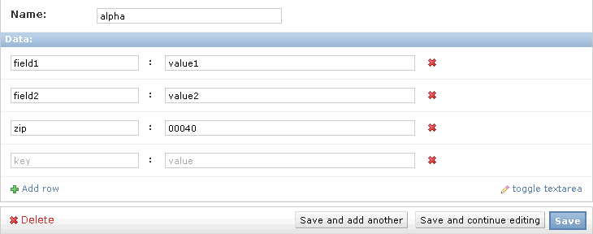
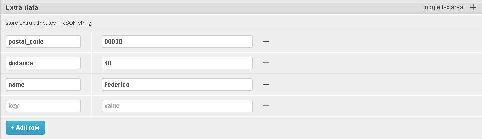

Introduction
django-hstore is a niche library which integrates the hstore extension of PostgreSQL into Django.
HStore brings the power of schemaless databases into PostgreSQL, giving us the advantage of flexibility and performance without renouncing to the robustness of SQL databases.
Mailing List: https://groups.google.com/forum/#!forum/django-hstore
Features
-
Postgis compatibility.
-
Python3 support.
-
Nice admin widgets.
Django Admin widget


Grappelli Admin widget


Limitations
-
PostgreSQL’s implementation of hstore has no concept of type; it stores a mapping of string keys to string values. Values are stored as strings in the database regarding of their original type.
-
Hstore extension is not automatically installed on use this package. You must install it manually.
-
To run tests, hstore extension must be installed on template1 database.
-
If django.middleware.transaction.TransactionMiddleware is enabled and the project is deployed through uwsgi, the first request to a view working with models featuring hstore fields will raise an exception; see Django Ticket #22297 for more details on this issue. This issue is specific to Django 1.6 and below.
Important Note: the future version of HStore will bring types, nested structures and more advanced features, for more info read On the state of HStore by Engine Yard.
Project Maturity
django-hstore is stable, widely used library with well defined deprecation policy.
Deprecation policy
At any momment of time, django-hstore developers will mantain support for three versions of django.
As example: The current stable release of django is 1.6, so django-hstore official supported versions are: 1.4, 1.5 and 1.6. When django 1.7 is released, 1.4 version will become on unsupported django version.
User Guide
This section covers all aspectes that user want know about django-hstore.
Install
This section covers a installing django-hstore and its requirements.
Requirements
-
Python 2.6, 2.7 or 3.3+
-
Django 1.4, 1.5, 1.6 and 1.7 (experimental)
-
Psycopg2 2.4.3+
-
PostgreSQL 9.0+
Stable version
pip install django-hstore
Development version
opip install -e git+git://github.com/djangonauts/django-hstore#egg=django-hstore
Upgrade from older versions
In version 1.2.x some internals have been changed in order to simplify usage and prevent errors.
Values are automatically converted to strings, fields costantly validate input and so on.
If you are upgrading from an older version ensure your application code works as expected. If it doesn’t you will either have to update your code or tie your application’s requirement to the older version of django-hstore (1.1.1).
Setup
Basic setup
First, add django_hstore to your settings.INSTALLED_APPS:
INSTALLED_APPS = (
...
"django_hstore",
...
)
Second, collect static files (needed for the admin widget) with:
python manage.py collectstatic
Multiple database setup
If for some reason you have to use django-hstore in a multi-database setup and some of the database you are using don’t have the hstore extension installed, you can skip hstore registration by setting HAS_HSTORE to False in your database config:
DATABASES = {
'default': {
'ENGINE': 'django.db.backends.postgresql_psycopg2',
'NAME': 'name',
'USER': 'user',
'PASSWORD': 'pass',
'HOST': 'localhost',
'PORT': '',
},
'other': {
'ENGINE': 'django.db.backends.postgresql_psycopg2',
'NAME': 'other',
'USER': 'user',
'PASSWORD': 'pass',
'HOST': 'localhost',
'PORT': '',
'HAS_HSTORE': False,
}
}
If you do that, then don’t try to create DictionaryField in that database.
Be sure to check out allow_syncdb documentation.
Note to South users
If you keep getting errors like There is no South database module south.db.None for your database., add the following to settings.py:
SOUTH_DATABASE_ADAPTERS = {'default': 'south.db.postgresql_psycopg2'}
Usage
The library provides three principal classes:
-
django_hstore.hstore.DictionaryField
An ORM field which stores a mapping of string key/value pairs in an hstore column. -
django_hstore.hstore.ReferencesField
An ORM field which builds on DictionaryField to store a mapping of string keys to django object references, much like ForeignKey. -
django_hstore.hstore.HStoreManager
An ORM manager which provides much of the query functionality of the library. -
django_hstore.hstore.HStoreGeoManager
An additional ORM manager to provide Geodjango functionality as well.
Model setup
from django.db import models
from django_hstore import hstore
class Something(models.Model):
name = models.CharField(max_length=32)
data = hstore.DictionaryField() # can pass attributes like null, blank, ecc.
objects = hstore.HStoreManager()
# IF YOU ARE USING POSTGIS:
# objects = hstore.HStoreGeoManager()
class ReferenceContainer(models.Model):
name = models.CharField(max_length=32)
refs = hstore.ReferencesField()
objects = hstore.HStoreManager()
Python API
You then treat the data field as simply a dictionary of string pairs:
instance = Something.objects.create(name='something', data={'a': '1', 'b': '2'})
assert instance.data['a'] == '1'
empty = Something.objects.create(name='empty')
assert empty.data == {}
empty.data['a'] = '3'
empty.save()
assert Something.objects.get(name='empty').data['a'] == '3'
Booleans, integers, floats, lists and dictionaries will be converted to strings. Lists, dictionaries and booleans are converted into JSON formatted strings, so can be decoded if needed:
instance = Something.objects.create(name='something', data={'int': 1, 'bool': True})
instance.data['int'] == '1'
instance.data['bool'] == 'true'
import json
instance.data['dict'] = { 'list': ['a', False, 1] }
instance.data['dict'] == '{"list": ["a", false, 1]}'
json.loads(instance.data['dict']) == { 'list': ['a', False, 1] }
# => True
You can issue indexed queries against hstore fields:
# equivalence
Something.objects.filter(data={'a': '1', 'b': '2'})
# comparison (greater than, less than or equal to, ecc)
Something.objects.filter(data__gt={'a': '1'})
Something.objects.filter(data__gte={'a': '1'})
Something.objects.filter(data__lt={'a': '2'})
Something.objects.filter(data__lte={'a': '2'})
# subset by key/value mapping
Something.objects.filter(data__contains={'a': '1'})
# subset by list of some key values
Something.objects.filter(data__contains={'a': ['1', '2']})
# subset by list of keys
Something.objects.filter(data__contains=['a', 'b'])
# subset by single key
Something.objects.filter(data__contains=['a'])
You can still do classic django "contains" lookups as you would normally do for normal text fields if you were looking for a particular string. In this case, the HSTORE field will be converted to text and the lookup will be performed on all the keys and all the values:
Something.objects.create(data={ 'some_key': 'some crazy Value' })
# classic text lookup (look up for occurence of string in all the keys)
Something.objects.filter(data__contains='crazy')
Something.objects.filter(data__contains='some_key')
# classic case insensitive text looup
Something.objects.filter(data__icontains='value')
Something.objects.filter(data__icontains='SOME_KEY')
HSTORE manager
You can also take advantage of some db-side functionality by using the manager:
# identify the keys present in an hstore field
>>> Something.objects.hkeys(id=instance.id, attr='data')
['a', 'b']
# peek at a a named value within an hstore field
>>> Something.objects.hpeek(id=instance.id, attr='data', key='a')
'1'
# do the same, after filter
>>> Something.objects.filter(id=instance.id).hpeek(attr='data', key='a')
'1'
# remove a key/value pair from an hstore field
>>> Something.objects.filter(name='something').hremove('data', 'b')
The hstore methods on manager pass all keyword arguments aside from `attr` and
`key` to `.filter()`.
ReferenceField Usage
ReferenceField is a field that allows to reference other database objects without using a classic ManyToMany relationship.
Here’s an example with the ReferenceContainer model defined in the Model fields section:
r = ReferenceContainer(name='test')
r.refs['another_object'] = AnotherModel.objects.get(slug='another-object')
r.refs['some_object'] = AnotherModel.objects.get(slug='some-object')
r.save()
r = ReferenceContainer.objects.get(name='test')
r.refs['another_object']
'<AnotherModel: AnotherModel object>'
r.refs['some_object']
'<AnotherModel: AnotherModel some_object>'
The database is queried only when references are accessed directly. Once references have been retrieved they will be stored for any eventual subsequent access:
r = ReferenceContainer.objects.get(name='test')
# this won't query the database
r.refs
{ u'another_object': u'myapp.models.AnotherModel:1',
u'some_object': u'myapp.models.AnotherModel:2' }
# this will query the database
r.refs['another_object']
'<AnotherModel: AnotherModel object>'
# retrieved reference is now visible also when calling the HStoreDict object:
r.refs
{ u'another_object': <AnotherModel: AnotherModel object>,
u'some_object': u'myapp.models.AnotherModel:2' }
Developers Guide
This section covers everything that django-hstore developer / contributor want know.
Running tests
Assuming one has the dependencies installed, and a PostgreSQL 9.0+ server up and running:
python runtests.py
By default the tests run with the postgis backend.
If you want to run the tests with psycopg2 backend you can do:
python runtests.py --settings=settings_psycopg
You might need to tweak the DB settings according to your DB configuration.
If you need to do so you can copy the file local_settings.py.example to local_settings.py and add your database tweaks on it. local_settings.py will be automatically imported in settings.py. The same applies for local_settings_psycopg.py.example, which will be imported in local_settings_psycopg.py.
If after running this command you get an error saying:
type "hstore" does not exist
Try this:
psql template1 -c 'create extension hstore;'
More details here on link: PostgreSQL error type hstore does not exist.
How to contribute
-
Join the mailing List: link: django-hstore mailing list and announce your intentions.
-
Follow PEP8, Style Guide for Python Code
-
Fork this repo
-
Write code
-
Write tests for your code
-
Ensure all tests pass
-
Ensure test coverage is not under 90%
-
Document your changes
-
Send pull request
License
Copyright (C) 2013-2014 Federico Capoano
Permission is hereby granted, free of charge, to any person obtaining a copy
of this software and associated documentation files (the "Software"), to deal
in the Software without restriction, including without limitation the rights
to use, copy, modify, merge, publish, distribute, sublicense, and/or sell
copies of the Software, and to permit persons to whom the Software is
furnished to do so, subject to the following conditions:
The above copyright notice and this permission notice shall be included in
all copies or substantial portions of the Software.
THE SOFTWARE IS PROVIDED "AS IS", WITHOUT WARRANTY OF ANY KIND, EXPRESS OR
IMPLIED, INCLUDING BUT NOT LIMITED TO THE WARRANTIES OF MERCHANTABILITY,
FITNESS FOR A PARTICULAR PURPOSE AND NONINFRINGEMENT. IN NO EVENT SHALL THE
AUTHORS OR COPYRIGHT HOLDERS BE LIABLE FOR ANY CLAIM, DAMAGES OR OTHER
LIABILITY, WHETHER IN AN ACTION OF CONTRACT, TORT OR OTHERWISE, ARISING FROM,
OUT OF OR IN CONNECTION WITH THE SOFTWARE OR THE USE OR OTHER DEALINGS IN
THE SOFTWARE.
Original Author
===============
Copyright (C) 2011 Jordan McCoy
Permission is hereby granted, free of charge, to any person obtaining a copy
of this software and associated documentation files (the "Software"), to deal
in the Software without restriction, including without limitation the rights
to use, copy, modify, merge, publish, distribute, sublicense, and/or sell
copies of the Software, and to permit persons to whom the Software is
furnished to do so, subject to the following conditions:
The above copyright notice and this permission notice shall be included in
all copies or substantial portions of the Software.
THE SOFTWARE IS PROVIDED "AS IS", WITHOUT WARRANTY OF ANY KIND, EXPRESS OR
IMPLIED, INCLUDING BUT NOT LIMITED TO THE WARRANTIES OF MERCHANTABILITY,
FITNESS FOR A PARTICULAR PURPOSE AND NONINFRINGEMENT. IN NO EVENT SHALL THE
AUTHORS OR COPYRIGHT HOLDERS BE LIABLE FOR ANY CLAIM, DAMAGES OR OTHER
LIABILITY, WHETHER IN AN ACTION OF CONTRACT, TORT OR OTHERWISE, ARISING FROM,
OUT OF OR IN CONNECTION WITH THE SOFTWARE OR THE USE OR OTHER DEALINGS IN
THE SOFTWARE.